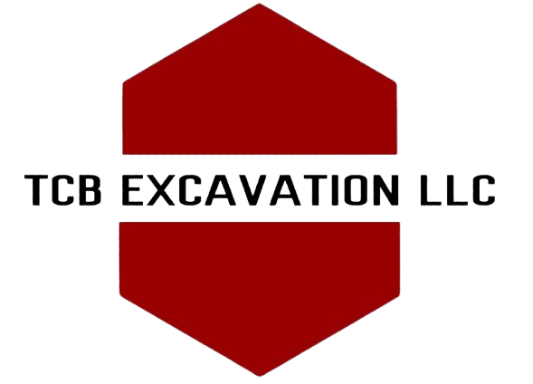
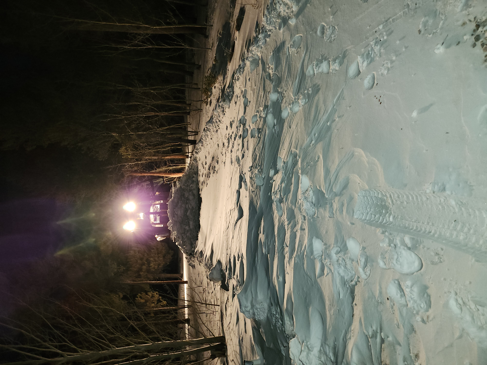
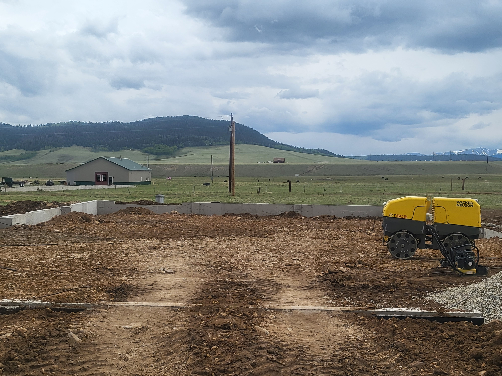
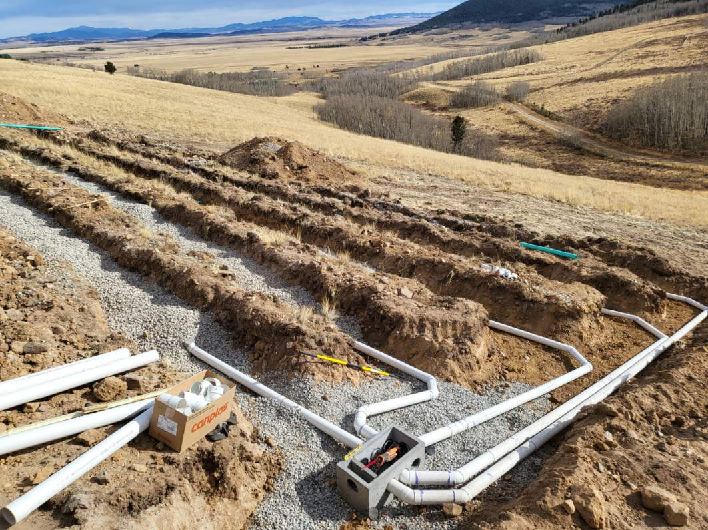

At TCB Excavation, we are dedicated to providing high-quality excavation services in Fairplay, Colorado. With 40 years of experience, 17 years of operation locally. We guarantee top-notch results for all your excavation needs.

Our snow plowing service keeps your driveways and walkways clear and safe throughout the winter. We provide reliable, timely snow removal so you can avoid hazards and get back to your day without worry.
More info
We offer expert land clearing and grading services to prepare your property safely and efficiently. Our work ensures clean, level surfaces ready for construction or landscaping.
More info
We provide reliable septic system installation with a focus on long-term performance and durability. All work is completed to code, ensuring full compliance and quality you can trust.
More info
We work on a variety of projects including construction site excavation,
land clearing, septic system installation, excavation and grading, foundation
excavation, water service, driveways, culverts, pushbacks, and snow plowing.
If your request is not in here and is related to excavation please reach out
to see if we can fufill it.
Yes, we take care of handiling permits and complying with regulations to ensure a smooth excavation process.
Safety is our top priority. We follow strict protocols, provide training to our team and use proper equipment to ensure a safe working environment.
TCB Excavation is a leading excavation company in Fairplay, Colorado, offering a range of services to meet your excavation needs. With a strong focus on quality and customer satisfaction, we are your go-to choice for all excavation projects.
Dig In
Customer Comments
Worked with us? Leave a comment below.
No comments yet. Be the first to leave one.